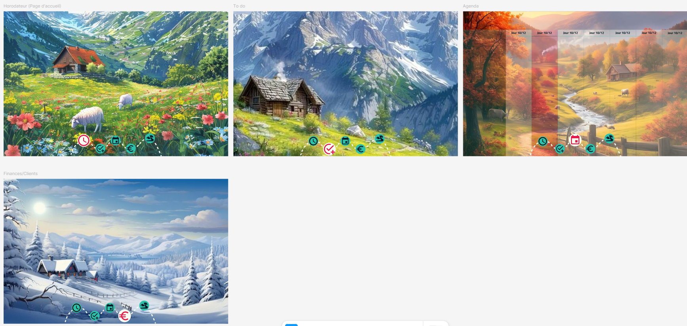
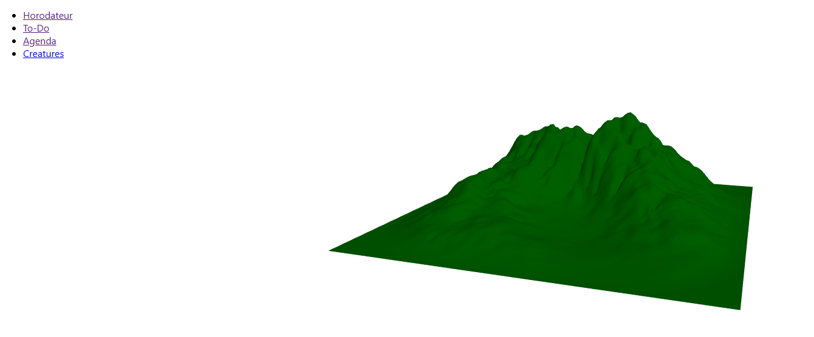

POK 2 : Site Web en React pour gérer mes tâches
- POK
- 2024-2025
- temps 2
- React
- 3D
- Gestion de tâches
- Kévin BERNARD
Un POK où je crée un site web attirant en React pour gérer mes tâches avec des animations 3D.
Pas de prérequis pour le moment
SOURCES
- Awwwards
- House of Dreamers de Andrea Giuffrida sur Awwwards
- Image postée par Maria Rojas sur Pinterest
- Images de HorizonPeaksDesigns sur www.etsy.com
- Tableau peinture paysage nature PARADIS D'AUTOMNE, sur le-petit-fermier.com
- Image générée par IA sur fr.freepik.com par pjdesign
- How to Implement a Blender Model in a React.js Application using Three.js de Matthes.B sur FreeCodeCamp
- GitHub du site
Le but de ce POK est de réaliser un site en React pour gérer mes tâches avec un horodateur, un agenda avec une importation de créatures 3D à partir de Blender. Ce qui peut se résumer à :
Tâches
Sprints
Sprint 1
- [x] Création v0 de la maquette de l'application
- [ ] Création des pages
Sprint 2
Horodatage
| Date | Heures passées | Indications |
|---|---|---|
| Début Sprint 1 | ||
| Mardi 05/11 | 2H45 | Création de la mind map et de la maquette |
| Dimanche 10/11 | 1H | Maquette : page Agenda |
| Jeudi 14/11 | 1H35 | Maquette: inspiration de House of Dreamers |
| Vendredi 15/11 | 1H | Importation du modèle blender sur la page web |
| Vendredi 15/11 | 0H45 | Ajustement de la lumière |
| Lundi 18/11 | 0H45 | Ajustement Caméra, position, taille |
| Mardi 19/11 | 2H15 | Création des pages et ajout de la navigation |
| Total | 9H45 | |
| <!-- | Début Sprint 2 | |
| Total | 0H | --> |
Contenu
Premier Sprint
Mind map/Maquette
1ère idée
Sachant que je n'avais aucune référence de laquelle m'inspirer, j'ai décidé de faire une MindMap de toutes mes idées sur Miro pour les organiser. J'ai classé mes idées en 3 catégories :
- Animations : liste des interactions possibles entre les créatures et mes actions (hover, finir une tâche...)
- Créatures : description des créatures et de comment gamifier la réalisation de tâches. (gagner des pierres pour invoquer de nouvelles créatures par exemple)
- Site : liste des pages et de leurs fonctionnalités/particularités
En parallèle, j'ai avancé le design de ma maquette sur Figma. J'ai fait une barre de navigation et regarder d'autres sites de productivité comme Asana ou Monday. Initialement, je suis parti sur un site classique avec les créatures qui seraient rajoutées avec des animations comme un tour du tableau de tâche quand je scroll vers le bas. Il y avait 4 pages :
- Horodateur : horodateur classique
- To do : liste des tâches par thème, projet
- Agenda : calendrier avec les tâches
- Créatures : gestion des créatures
Cela ne m'allait pas, je ne trouvais pas la chose attirante donc j'ai recherché des inspirations de sites en 3D sur Instagram et des sites internets dont le site Awwwards où j'ai trouvé le modèle House of Dreamers de Andrea Giuffrida qui m'a beaucoup plu.
2e idée
Le modèle House of Dreamers de Andrea Giuffrida m'a donné l'idée de faire un fond 3D avec les créatures dedans.
- En premier lieu, je me suis dit que j'allais intégrer les informations de mon site à mon décor. Par exemple, il y a un lac avec une cascade et le texte s'affiche sur l'eau. Après réflexion, j'ai trouvé cela trop compliqué à rendre intéressant et à faire.
- J'ai opté pour mettre le texte et mes graphiques par dessus mon décor. Pour le choix de mes décors :
- Option 1 : Plusieurs paysages différents -> avantage : très créatif; problèmes : beaucoup de travail de blender + cohérence entre les pages et le style
- Option 2 : Même paysage avec un changement de saison d'une page à l'autre -> avantages : 4 fois moins de travail + cohérence avec les créatures qui sont organisées selon 4 éléments + cohérence des pages; problème : je n'aime pas, je trouve cela plat.
- Option 3 : Changement d'élément à chaque page, avec un décor correspondant -> avantage : cohérence avec les éléments des créatures; problème : manque de cohérence visuel entre les pages
J'ai passé beaucoup de temps sur l'apparence possible de mon site, je ne savais pas quoi décidé entre les 3 options. Sachant que je n'aurai pas le visuel tout de suite puisqu'il faut créer les décors sur Blender, je me suis arrêté là sur la partie design pour me concentrer sur la création du site en React. Pour l'instant, ma maquette ressemble à cela (option 2): 
Importation module 3D
Ayant clarifier grossièrement à quoi ressemblera mon site, je suis passé à l'implémentation de mon idée sur React.
Je me suis renseigné sur React et j'ai créé mon projet grâce aux MONs de Thomas DUROY et Omar SALAME.
Ensuite, j'ai téléchargé un modèle gratuit de Mixalisg depuis 3DEXPORT sous format glb. J'ai fait les recherches pour mon MON et téléchargé les bibliothèques React Three Fiber et React Three Drei.
Dans un second temps, j'ai suivi un tutoriel de Matthes.B sur FreeCodeCamp pour importer un document depuis Blender jusqu'à ma page web. Et j'ai jouer avec les paramètres avoir quelque chose de satisfaisant.
Avec le temps qu'il me restait, j'ai rajouté les liens avec React-rooter-dom.
Pour le moment cela ressemble à cela :
